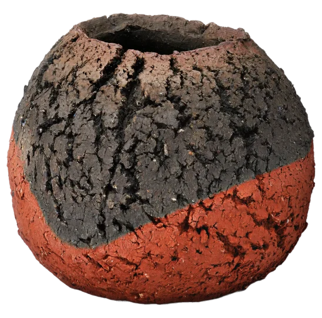
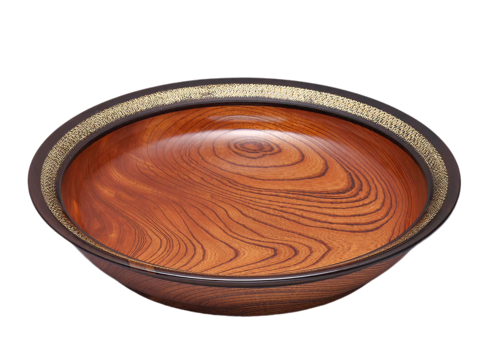
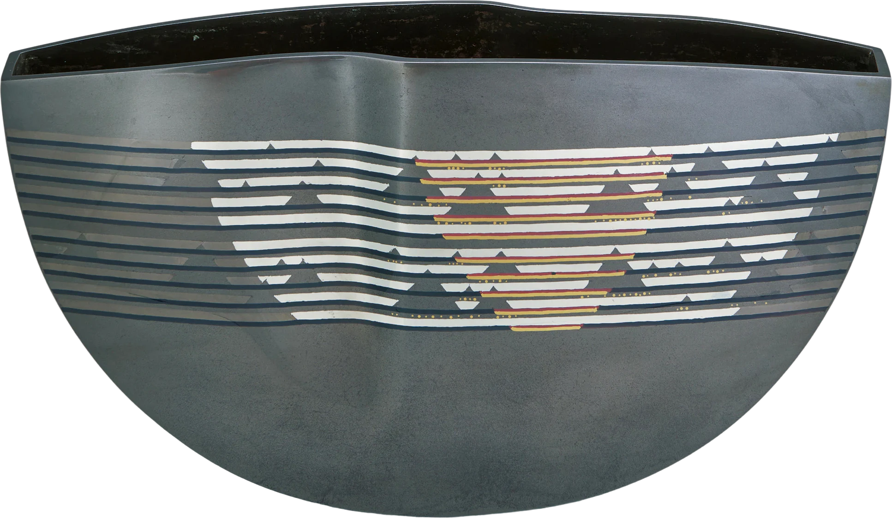
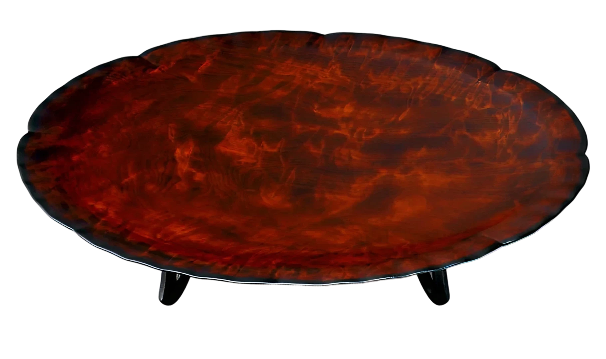

作りませんか
文化を共に
私たちは、工芸を、限られた人だけの世界ではなく、現代を生きる人々の人生や時間、空間や体験の中へ届けていきたいと考えています。
文化は、歴史の中に残るだけではなく、人が触れ、惹かれ、人生の中へ取り入れることで、その人の中にも生き続けていくものだと思うからです。
工芸が入ることで、これまでとは違う体験が生まれるかもしれない。
これまでとは違う空気感が生まれるかもしれない。これまでとは違う「好き」が生まれるかもしれない。
私たちは、そんな文化との新しい出会いを、これからもさまざまな形でつくっていきます。